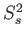

Next: The transformed relaxation equations Up: Model-free theory Previous: Model-free theory Contents Index
For the minimisation of the model-free models a chain of calculations, each based on a different theory, is required. At the highest level the equation which is actually minimised is the chi-squared function
where the index i is the summation index ranging over all the experimentally collected relaxation data of all spins used in the analysis; Ri belongs to the relaxation data set R for an individual spin, a collection of spins, or the entire macromolecule and includes the R1, R2, and NOE data at all field strengths; Ri(θ) is the back-calculated relaxation value belonging to the set R(θ); θ is the model parameter vector which when minimised is denoted by ; and σi is the experimental error.
The significance of the chi-squared equation (7.1) is that the function returns a single value which is then minimised by the optimisation algorithm to find the model-free parameter values of the given model.